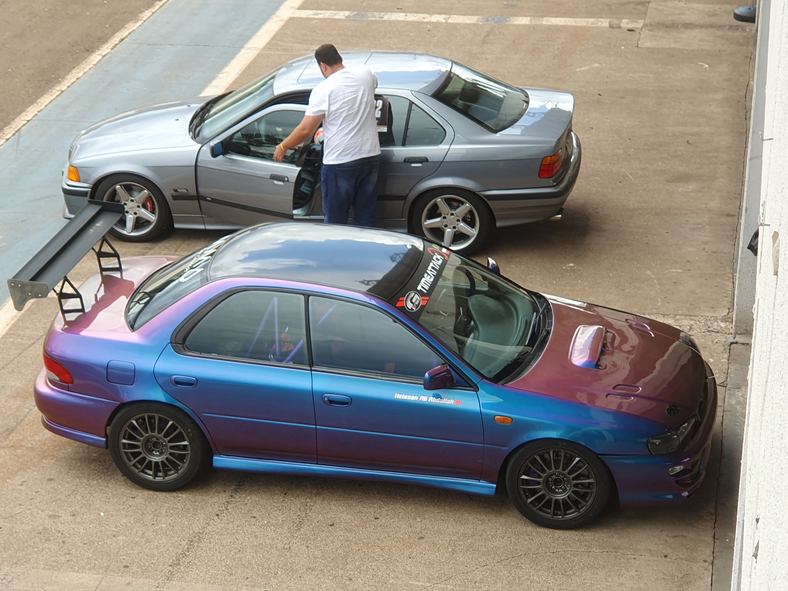
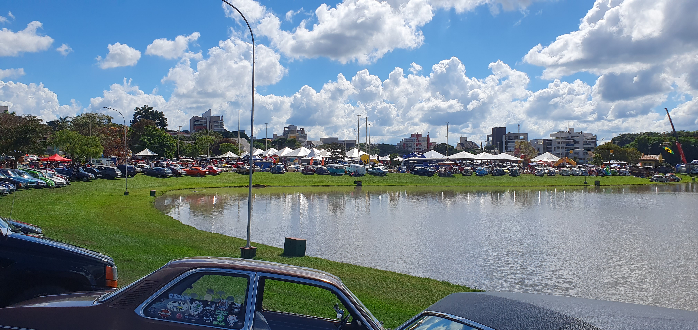
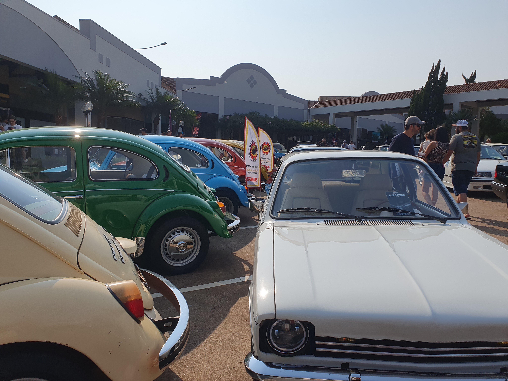
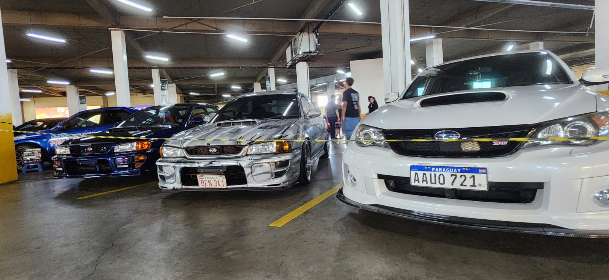
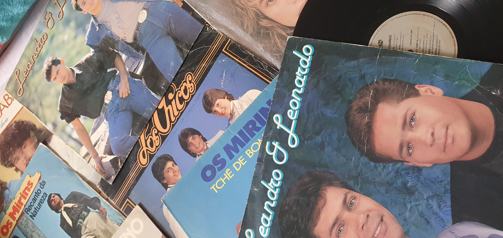
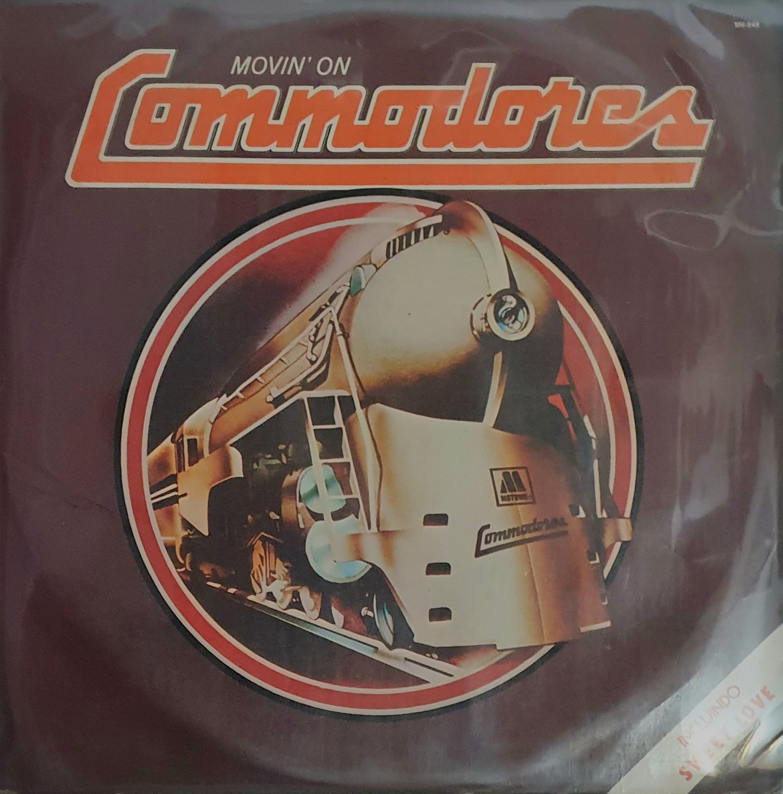
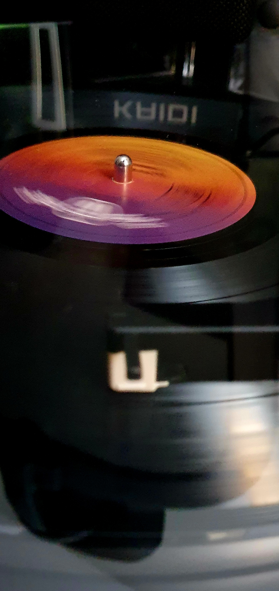
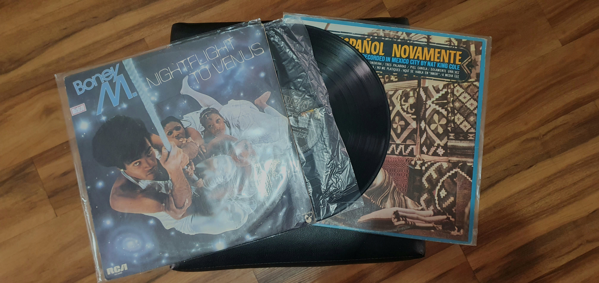
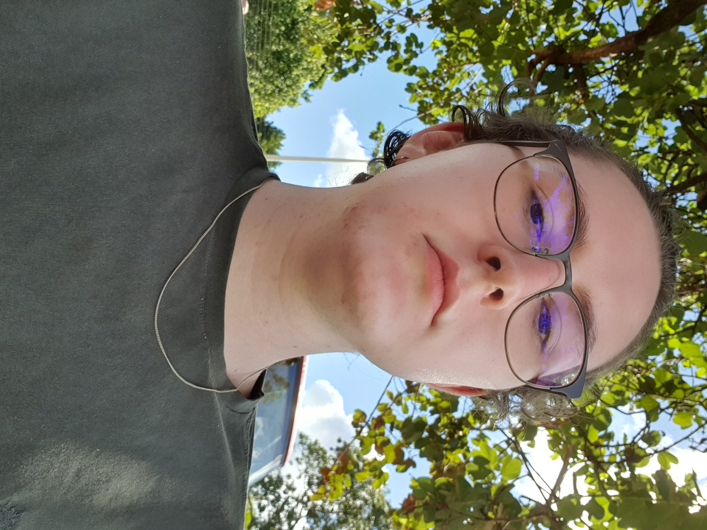

Hobbies
Pixel Art


Eventos de Carros




Discos de Vinil





Estudante de TADS | Desenvolvedor Web | Gosto de tecnologia e arte
Formado em Técnico em Desenvolvimento de Sistemas Integrado ao Ensino Médio (2021-2024), possuo formação
técnica sólida com foco em desenvolvimento de interfaces interativas e soluções práticas. Busco
oportunidades para contribuir com projetos inovadores, aliando minha experiência em equipe ao
aprendizado contínuo.
Experiência prática:
· Desenvolvimento de aplicações web e mobile:
‣ Front-End: Criação de interfaces interativas e responsivas com HTML, CSS, JavaScript e React
Native.
‣ Back-End: Integração com bancos de dados (MySQL, SQL) e uso de PHP para funcionalidades
dinâmicas.
· Automação de processos: Desenvolvimento de scripts em Python, C++ e C# para otimizar tarefas
repetitivas.
Habilidades técnicas:
· Gestão de projetos com metodologia ágil SCRUM.
· Modelagem de dados e documentação técnica.
Objetivos atuais:
· Obter certificações em frameworks modernos (React.js, Vue.js) e UX/UI Design.
· Ampliar conhecimentos em desenvolvimento Front-End e colaboração em equipe.
Tenho experiência em projetos colaborativos durante o ensino médio, com foco em resultados práticos.
Valorizo mentalidade colaborativa e estou sempre aberto a trocas de conhecimento.
Estou disponível para novas conexões e oportunidades, mentorias e desafios na área de tecnologia!







